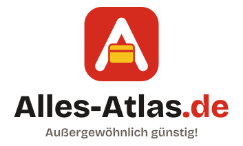

Markenleitfaden
Alles-Atlas.de
Atlas trägt die Welt, wir tragen alles andere. Das Zeichen ist ein „A“ in Form eines Dachs, dessen Querstrich ein Umzugskarton ist: Haus, Ladung und Name in einem Symbol. Rot und Gelb stammen vom Transporter und machen Fahrzeug, Laden und Website zu einer Marke.
Logo





Schutzraum
Rund um das Logo mindestens die halbe Höhe des Bildzeichens freihalten.
Mindestgröße
Bildzeichen ab 16 px, horizontales Logo ab 140 px Breite (Druck: 30 mm).
Nicht erlaubt
Farben tauschen, verzerren, Schatten/Konturen hinzufügen, auf unruhige Fotos ohne Fläche setzen.
Farben
Atlas-Rot
#D52B1E · RGB 213 43 30
Hauptfarbe, Buttons, Akzente
Lastenkamel-Gelb
#F7C21B · RGB 247 194 27
Hervorhebung, Karton im Zeichen
Tinte
#1D1B19 · RGB 29 27 25
Text, dunkle Flächen
Papier
#FBF6EE · RGB 251 246 238
Hintergrund
Karton
#F3EBDF · RGB 243 235 223
Zweiter Hintergrund
Schrift
Überschriften · Bricolage Grotesque (ExtraBold 800)
Wer Ordnung schafft, schafft Platz im Kopf!
Fließtext · Inter (Regular 400 / SemiBold 600)
Schnelle & flexible Besichtigung mit sofortigem Pauschalangebot noch vor Ort. Beide Schriften sind Open-Source (SIL OFL) und werden lokal geladen. Kein Google-Fonts-Abruf, DSGVO-freundlich.
Tonalität
Persönlich
„Rufen Sie mich an“: Der Inhaber steht mit Namen und Gesicht für die Arbeit.
Direkt
Festpreis, keine versteckten Kosten, besenrein. Klare Zusagen statt Floskeln.
Mit Augenzwinkern
„Lastenkamel“, „auch, was Sie nicht suchen 😉“. Bodenständiger Humor ist erwünscht.